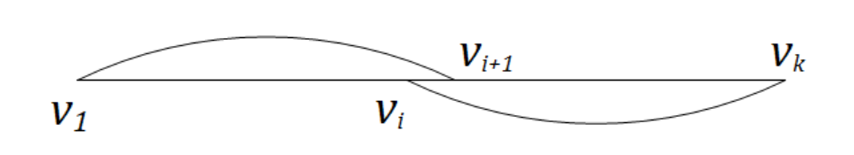
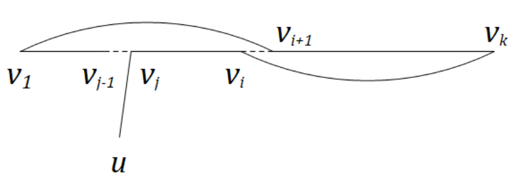
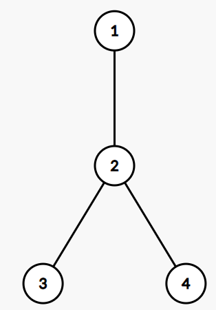

算法导论B Problems 答案
B-1
a
考虑使用数学归纳法证明。
当\(n=1\)时，只有一个节点的树肯定是\(2\)可着色的。
当\(n>1\)时，假设对于\(k=1,2,\dots,n-1\)个节点的树都是\(2\)可着色的。考虑将第\(n\)个节点\(v_n\)和树中的任意一个节点\(v\)相连，那么只需要给\(v_n\)染成\(c(v_n)=1-c(v)\)即可，\(2\)可着色的性质仍然保持。
因此，原结论成立。
b
1→2
由于图\(G\)是一个二分图，因此可以将图\(G=(V,E)\)中的所有点分成两个集合\(V_0,V_1\)，使得\((u,v)\in E\)当且仅当\(u\in V_0,v\in V_1\)或者是\(u\in V_1,v\in V_0\)。因此点集\(V_0,V_1\)中的点两两之间没有边，令\(\forall u \in V_0,c(u)=0,\forall v \in V_1,c(v)=1\)。那么这个图就是\(2\)可染色的。
2→3
考虑证明逆否命题成立：如果它存在奇数环，那么它不是\(2\)可着色的。
假设这个环是\(v_0,v_1,v_2,v_3,\dots,v_{2k-1},v_{2k},v_0\)。这个环的长度为\(2k+1\)，这一个序列的长度为\(2k+2\)。这个序列首位相接，序列的\(c(v_0)\)都是同一个数。按照\(2\)可染色的定义，有\(c(v_0)\neq c(v_1),c(v_1)\neq c(v_2),\dots\)都成立。同时有\(\dots,c(v_{2k-1})\neq c(v_{2k}),c(v_{2k})\neq c(v_0)\)成立。因此，\(c(v_1)=c(v_{2k}),c(v_2)=c(v_{2k-1}),\dots\)，最终发现有\(c(v_k)=c(v_{k+1})\)，即说明这相邻两个点\(v_k,v_{k+1}\)同时染上了同一种颜色，因此这个图不是\(2\)可着色的。
因此，原命题成立。
3→1
如果图\(G=(V,E)\)没有环，那么\(G\)就是一个森林。森林是树的子集，因此森林肯定是一个二分图。
如果图\(G=(V,E)\)仅存在偶环。
假设图\(G\)如果存在环，那么也只能存在偶数环。遍历图\(G=(V,E)\)中的每个连通分量\(C\)，假设\(C\)中存在一个点\(v_0\)，令\(d(v)\)为在连通分量\(C\)下的点\(v\)与\(v_9\)的最短距离。并且令\(c(v)=d(v)\bmod 2\)。如果\(G\)的两个相同颜色顶点有边，也就是说，\(\exists x,y \in V_C,c(x)=c(y)\)，那么路径\(v_0\rightarrow x\rightarrow y\rightarrow v_0\)是一个奇数环。否则\(\forall v\in V,c(v)=i\Leftrightarrow v\in V_i\)，那么我们找到了一个点集\(V_0,V_1\)，它是一个二分图。
最终，这\(3\)个条件都是等价的。
c
考虑使用数学归纳法进行证明。
命题：一个\(n\)个节点的图某个顶点最大度数为\(k\)，那么这个图是\(k+1\)可着色的。
当\(n=k+1\)时，假设这个\(n\)个节点的图中至少有一个节点的度数为\(k\)。这时可以用\(k+1\)种不同的颜色分别为这\(n\)个节点涂上\(k+1\)种不同的颜色。
当\(n>k+1\)时，假设当\(n'=k+1,k+2,\dots,n\)时，原结论都成立。考虑一个\(n+1\)个节点的图\(G_{n+1}\)，其最大的顶点度数仍然为\(k\)。删去一个特定的节点\(v\)，及其关联所有的边后，得到的图\(G_n\)有\(n\)个节点，最大顶点度数仍然不会超过\(k\)。根据假设，可以知道\(G_n\)存在一个\(k+1\)染色方案。现在补上这个节点\(v\)后，这个节点的度数最多为\(k\)，\(v\)关联的节点最多有\(k\)个，而我们现在有\(k+1\)种颜色可以对这个节点染上颜色，只需要选择一种和\(v\)关联的节点都不一样的颜色即可。故\(G_{n+1}\)也存在一种染色方案。
因此原结论成立。
d
本题参考了本页面的解释。
假设一个图\(G=(V,E)\)中，度数至少为\(\sqrt{|E|}\)的节点集合为\(V'\)。通过握手定理，可以得到有至少\(\dfrac{|V'|\sqrt{|E|}}{2}\)条边关联了\(V'\)中的节点。那么可以得到\(\dfrac{|V'|\sqrt{|E|}}{2}\le |E|\)，即\(|V'|\le 2\sqrt{|E|}\)。因此，我们可以先将\(V'\)里的节点染上\(|V'|=O(\sqrt{|E|})=O(\sqrt{|V|})\)种不同的颜色。
那么接下来将\(G\)中的\(V'\)中的所有节点及其有所关联的边全部删去，得到\(G\)的子图\(G'=(V-V',E')\)。可以发现，\(G'\)的最大节点度数至多为\(\sqrt{|E|}\)。根据题目B-1-c，\(G'\)是\(\sqrt{|E|}+1=O(\sqrt{|V|})\)可染色的。
在这两轮上色都使用不同的颜色，但是它们的数量级都是\(O(\sqrt{|V|})\)。因此图\(G\)可以用\(O(\sqrt{|V|})\)中颜色进行染色。
B-2
a
对于\(G=(V,E),|V|\ge 2\)，\(\exists u,v\in V,u\neq v,\text{degree}(u)=\text{degree}(v)\)。
证明：使用反证法证明。
由于度数的取值范围是\(0,1,\dots,|V|-1\)，恰好只有\(|V|\)个不同取值。存在一个图的度数序列是\(0,1,\dots,|V|-1\)的排列，那么将会产生一对矛盾的节点：度数为\(0\)的节点\(u\)和度数为\(|V|-1\)的节点\(v\)。如果这对节点相邻，那么\(u\)的度数不为\(0\)，否则\(v\)的度数不为\(|V|-1\)。
因此原结论成立。
b
对于\(\forall G=(V,E),|V|=6\)，总存在三个不同节点\(u,v,w\in V\)，使得以下其中一条结论必定成立：
\((u,v)\in E\land(u,w)\in E\land(v,w)\in E\)
\((u,v)\not\in E\land(u,w)\not\in E\land(v,w)\not\in E\)
证明：
考虑一个完全图\(G=(V,E')\)。如果\((u,v)\in E\)，那么\((u,v)\)在\(G'\)中染成红色，否则染成蓝色，那么转化为这个完全图中必定存在一个同色三角形，即\((u,v),(u,w),(v,w)\)染上的是同一种颜色。
对于任意\(u\in V\)，根据抽屉原理，\(v\)的度数为\(5\)，那么和\(v\)关联的边至少\(3\)是同色的。因此不失一般性，假设\((u,a),(u,b),(u,c)\)这三条边是同色的。考虑\(3\)条边\((a,b),(b,c),(a,c)\)的颜色。如果这\(3\)条边的颜色和\((u,a)\)的颜色都不相同，那么说明\((a,b),(b,c),(a,c)\)这三条边构成同色三角形，原结论成立；否则，如果存在一条边（假设是\((a,b)\)）和\((u,a)\)颜色相同，那么说明\((a,b),(u,a),(u,b)\)这三条边构成同色三角形，原结论依然成立。
因此最终结论成立。
c
对于无向图\(G=(V,E)\)，可以将\(V\)划分成两组\(V_0,V_1\)，满足：\(\forall v\in v_x,x\in\{0,1\}\)，节点\(v\)的至少一半邻居在集合\(V_{1-x}\)。
证明：
一开始，先将\(V\)任意划分成两部分\(V_0,V_1\)。令集合\(E'=\{(u,v)\mid (u,v)\in E,\exists x\in \{0,1\},u\in V_x,v\in V_{1-x}\}\)。接下来的过程需要动态维护集合\(S\)。
对于任意\(v\in V_0\)，如果发现\(v\)在\(V_0\)的邻居多于\(V_1\)，那么可以将\(v\)从\(V_0\)转移到\(V_1\)，这将会时集合\(E'\)的大小严格增加。否则说明\(v\)满足条件，不需要移动。类似的，对\(v\in V_1\)也进行类似的操作，这同样会使得集合\(E'\)的大小严格增加。
由于集合\(E'\subseteq E\)的大小是有限的。因此，这个过程将会在有限次之后停下。最终的划分将会使两个集合中的所有节点满足条件。
d
对于无向图\(G=(V,E),|V|\ge 3,\forall v \in V,2\cdot\text{degree}(v)\ge |V|\)均成立。那么图\(G\)存在一个长度为\(|V|\)的简单环\(v_0,v_1,v_2,\dots,v_{|V|-2},v_{|V|-1},v_0\)，也就是每一个节点都经过恰好一次的环。这个定理是Dirac定理，这个环是\(G\)的哈密顿回路。
证明：
假设图\(G=(V,E)\)满足条件。那么首先证明\(G\)是连通图，这个使用反证法证明。对于特定的\(2\)个点\(u,v\)，假设它们之间没有边，并且\(u\)和\(v\)没有连通，属于两个不同的连通块。那么这个图至少有\((\text{degree}(u)+1)+(\text{degree}(v)+1)=2+|V|>|V|\)个点。这是不可能的，因此图\(G\)必定是连通图。
假设路径\(v_1,v_2,\dots,v_{k-1},v_k\)是图中\(G\)的最长简单通路\(P\)，并且首尾已经不能继续延长。那么说明，\(v_1\)的至少\(|V|/2\)个的邻居都在\(v_2,v_3,\dots,v_{k-1},v_k\)中；同样的，\(v_k\)的至少\(|V|/2\)个的邻居都在\(v_1,v_2,\dots,v_{k-2},v_{k-1}\)中。也就是说，存在至少\(|V|\)个不同的\(i\)，使得\((v_0,v_{i+1})\in E\)。那么由于\((\text{degree}(v_1)+1)+(\text{degree}(v_k)+1)=2+|V|>|V|\ge k\)，因此根据抽屉原理，\(\exists i,(v_0,v_{i+1})\in E\land (v_i,v_k)\in E\)成立。那么可以将\(P\)转化成一个简单环\(C\)（如图所示）：
\(v_1,v_2,\dots,v_i,v_k,v_{k-1},v_{k-2},\dots,v_{i+2},v_{i+1},v_1\)

如果\(C\)是一个哈密顿回路（也就是\(k=n\)），那么证明完成。否则，由于\(G\)是连通图，考虑\(v_j(j\in [1,k])\)和\(v_j\)的一个不在\(C\)中的邻居\(u\)。也就是说，\((u,v_j)\in E,\nexists i\in[1,k],v_i=u\)。那么我们根据这个环，继续构造出一条更长的简单通路\(P'\)，并包含\(k+1\)个节点：

再按照上面的方式进行迭代，可以将\(k+1\)个节点的\(P'\)转化成\(C'\)。因此，最终当图中没有任何一个节点时，我们就得到了一条哈密顿回路。
B-3
a
由于只需要断掉一条边，因此假设集合\(A\)是这棵二叉树\(T\)的真子树（也就是说，\(B\)一定包含叶节点，非空的）。那么相当于证明：对于任意二叉树\(T\)，存在一棵子树\(A\)，其节点数满足\(|T|-\dfrac{3}{4}|T|\le |A|\le \dfrac{3}{4}|T|\)，即\(\dfrac{1}{4}|T|\le |A|\le \dfrac{3}{4}|T|\)成立。假设\(T\)的根节点为\(r\)。
考虑使用反证法证明。
令\(S(u)\)表示以\(u\)为根的子树中的节点个数。那么按照题意有\(S(r)=|V|\)。
假设不存在任何节点\(u \in V\)，使得\(\dfrac{|T|}{4}\le S(u)\le\dfrac{3|T|}{4}\)成立。也就是说，对于所有节点\(u\)，要么\(S(u)<\dfrac{|T|}{4}\)，要么\(S(u)>\dfrac{3|T|}{4}\)。
考虑构造树\(T\)中一条从根节点到某个叶子的路径\(\langle v_0,v_1,v_2,\dots,v_d\rangle\)，其中\(v_0=r,v_d\)是某个叶子，即\(S(v_d)=1\)。对于\(0\le i< d\)，构造方式如下：
- 如果\(v_i\)有两个子节点，设其为\(l_i,r_i\)。如果\(S(l_i)\ge S(r_i)\)，那么\(v_{i+1}=l_i\)，否则\(v_{i+1}=r_i\)。
- 如果\(v_i\)有一个子节点，那么\(v_{i+1}\)是\(v_i\)的那个唯一一个子节点。
那么按照这个构造方式，\(\forall 0\le i< d,\dfrac{S(v_{i+1})}{S(v_i)}\ge \dfrac{1}{3}\)都成立。可见，只有当\(l_i,r_i\)都是叶节点时，这个不等式的等号才成立。因此序列\(\{S(v_i)\}\)是一个不递减序列。
考虑自顶向下遍历这条路径。如果当前节点\(v_i\)满足\(\dfrac{|T|}{4}\le S(v_i)\le\dfrac{3|T|}{4}\)，那么\(v_i\)为所求节点，证明结束。否则，如果存在某个\(j,0<j<d\)，使得\(S(v_j)>\dfrac{3|T|}{4},S(v_{j+1})<\dfrac{|T|}{4}\)成立，那么得到\(\dfrac{S(v_{j+1})}{S(v_j)}< \dfrac{1}{3}\)，与构造的\(\{S(v_i)\}\)序列的性质矛盾。
因此原结论成立。
b
构造的这棵树如图所示：

无论切除哪一条边，都可以将顶点集分成一个大小为\(1\)。一个大小为\(3\)的集合，使得上述定理中的等号部分成立。
c
对于\(k=0,1,2,...,n-1,n\)，考虑证明这个定理的更一般的版本：只需要移除最多\(O(\lg n)\)的边，就可以将整棵树划分成有\(k\)个节点和\(n-k\)个节点的集合。
当\(n=1\)时，原结论显然成立。
当\(n>1\)时，假设对于\(n'=1,2,3,\dots,n-1\)，结论都成立。假设一开始的划分是\(A=V,B=\varnothing\)。那么在每一次划分时，如果\(|A|=k\)，那么结束划分；当\(|A|>k\)时，考虑对集合\(A\)进行划分，分走\(|A|-k\)个元素给\(B\)；当\(|A|< k\)时，考虑对集合\(B\)进行划分，分走\(k-|A|\)个元素给\(A\)。
根据题目B-3-a的结论，对于一个大小为\(|V|\)的集合，进行一次删边就可以得到一个\(\left[\dfrac{|V|}{4},\dfrac{3|V|}{4}\right]\)范围内的划分。每次进行划分的点集都是原来至多的\(\dfrac{3}{4}\)。因此划分的次数（也就是删边的次数）为\(O(\lg |V|)\)。